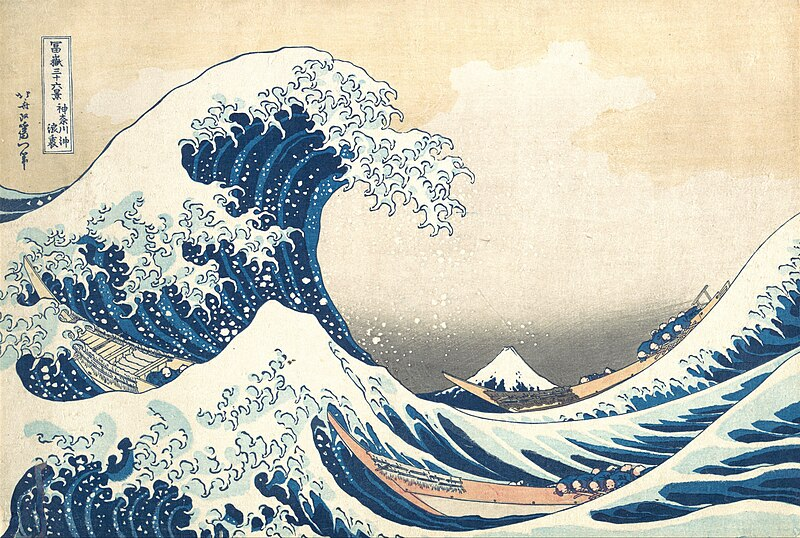

Multiple Instances
Several annotated images on one page with different configurations. Instances are independent.
Editable with Notes
editable: true, pre-loaded static notes.

Read-Only with Notes
editable: false, different set of annotations.

Empty (Add from Scratch)
editable: true, no pre-loaded notes. Draw your own.
